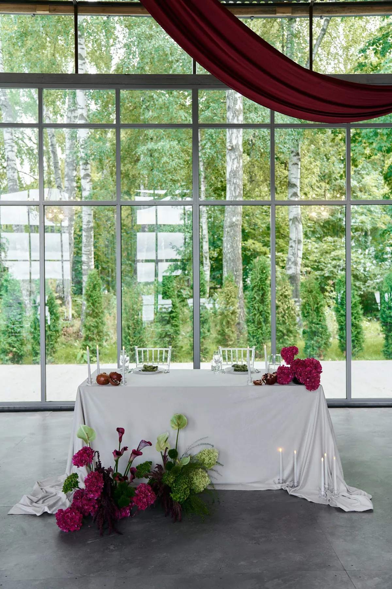

Оформление мероприятия — это не набор украшений, а продуманное пространство: от входа до сцены, от столов до фотозоны. Рассказываем, что входит в работу студии, как проходит заказ и что нужно, чтобы мы могли предложить идею и посчитать смету. Примеры в статье — наши проекты: они показывают, как мы работаем с залом, тканью и цветами.
Что входит в оформление
- Флористика. Композиции на столы, у сцены и входа, арки, гирлянды из зелени. Подробнее — в статье про цветочное оформление.
- Ткань и драпировка. Фоны, потолок, арки, текстиль на столах. Подробнее — в статье про текстиль и драпировку.
- Конструкции и объекты. Арки, фоны для сцены, объёмные фотозоны, ёлки и сезонные композиции.
- Свет и детали. Свечи, гирлянды, подсветка, таблички, навигация.
- Монтаж и демонтаж. Доставка, сборка на площадке, уборка конструкций после мероприятия.
Примеры «позиций» можно посмотреть в каталоге: это объекты из наших реальных проектов.


Какие мероприятия оформляем
Свадьбы, юбилеи, дни рождения, корпоративы, новогодние праздники, входные группы, офисы и рестораны. Подходы у всех общие: идея и палитра, зоны, материалы, свет. Различается масштаб и акценты. Подробнее — в статьях про корпоратив, про юбилей, про день рождения и про Новый год. Больше всего проектов с фото у нас — свадьбы; их можно посмотреть в разделе «Кейсы».
Как проходит работа
- Бриф. Вы рассказываете о мероприятии: дата, площадка, число гостей, повод и пожелания; присылаете фото зала.
- Идея и мудборд. Мы предлагаем концепцию, палитру и примеры решений.
- Смета по позициям. Каждая зона и каждый материал — отдельной строкой, чтобы было видно, из чего складывается стоимость.
- Согласования. Уточняем у площадки доступ, крепления и правила (огонь, пожарная безопасность).
- Монтаж и демонтаж. Собираем декор на площадке и убираем после мероприятия.
Подробнее о каждом шаге — в статье про этапы работы со студией.
Что прислать, чтобы мы посчитали смету
- Дату, площадку и число гостей.
- Повод и формат: что за мероприятие, какая программа.
- Фото и план зала.
- Ориентир по стилю и цвету: любимые цвета, фирменные цвета, примеры, которые нравятся.
Мы работаем в Москве и Подмосковье. Расскажите о мероприятии — предложим идею и посчитаем смету.
Частые вопросы
Работаете ли вы по всей Москве?
Мы оформляем мероприятия в Москве и Подмосковье. Если площадка далеко, расскажите — обсудим логистику.
Что нужно знать, чтобы заказать оформление?
Дату, площадку, число гостей и формат мероприятия. Фото зала и пожелания по стилю помогут быстрее предложить идею.
Можно ли заказать только часть оформления?
Да: например, только флористику, фон для сцены или фотозону. Смета строится по позициям.